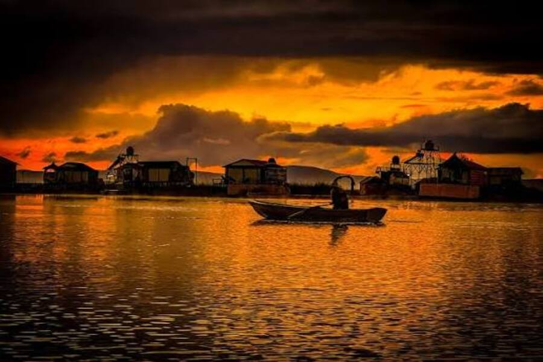
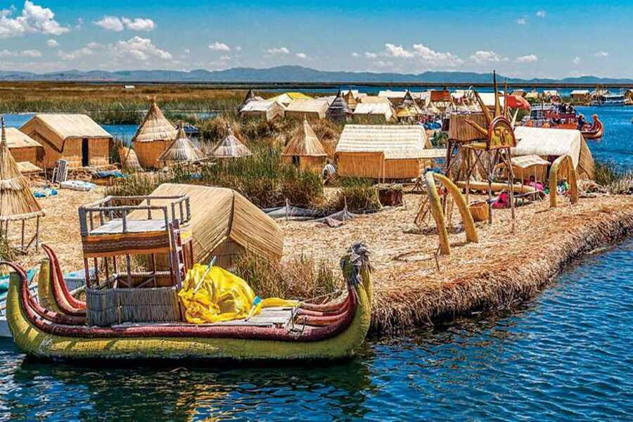
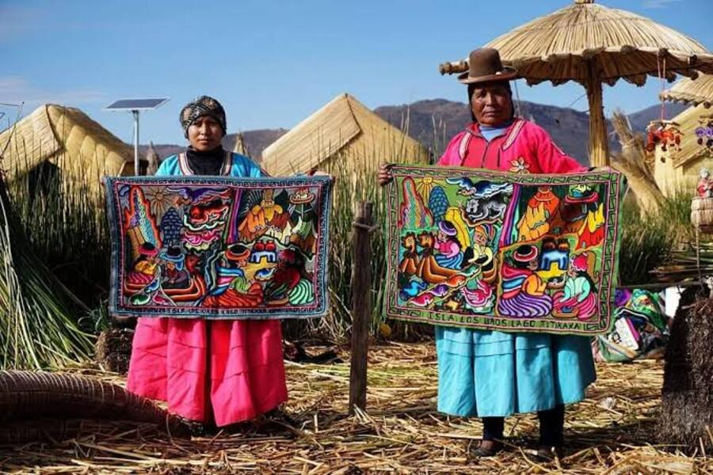
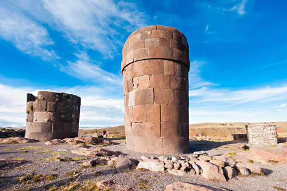

Ayaviri, mi tierra
Aquí la ganadería de vacas y ovinos es parte de la vida diaria. Se cultivan papa, quinua, avena y alfalfa. Su plato típico es el kankacho ayavireño y cada año se celebra la fiesta de la Virgen de Alta Gracia, con danzas.

Toca un punto del mapa para conocer cada lugar. Empezamos en Ayaviri, mi tierra, y recorremos el altiplano hasta el Lago Titicaca.

Aquí la ganadería de vacas y ovinos es parte de la vida diaria. Se cultivan papa, quinua, avena y alfalfa. Su plato típico es el kankacho ayavireño y cada año se celebra la fiesta de la Virgen de Alta Gracia, con danzas.
Torres de piedra llamadas chullpas, construidas para enterrar a personas importantes. Están junto a la laguna Umayo y se ven desde lejos.
Capital de la región. Tiene la Plaza de Armas, la catedral y el mirador Kuntur Wasi, desde donde se ve la bahía del lago.
Islas flotantes hechas con totora, una planta que crece en el lago. Las familias también usan la totora para sus casas y sus botes.
Es famosa por sus tejidos hechos a mano. Sus pobladores conservan su forma de vestir y sus costumbres.
Uno de los lagos navegables más altos del mundo, a unos 3 800 metros sobre el nivel del mar. Lo comparten Perú y Bolivia.



